CoBuddy 亲子牙刷 · 04 / 04
CoBuddy 亲子牙刷 · 04 / 04
不是把牙刷变可爱，
而是让孩子握得稳。
给 3–6 岁孩子和家长的一对亲子牙刷：孩子主握，家长从外侧稳定辅助，不再抢过来代刷。
设计
一对牙刷：
孩子握得稳，家长扶得准。
儿童款负责“握得稳”，家长款负责“扶得准”；两支沿用同一套海獭造型，放在一起就是一对母子。
Kid · 3–6 岁
儿童牙刷
小巧易握，环抱式握柄贴合小手掌；软硅胶保护口腔。
Parent
家长牙刷
流线把手设计，舒适稳定、控制自如；全面清洁，深入呵护口腔健康。
产品渲染 · 儿童款
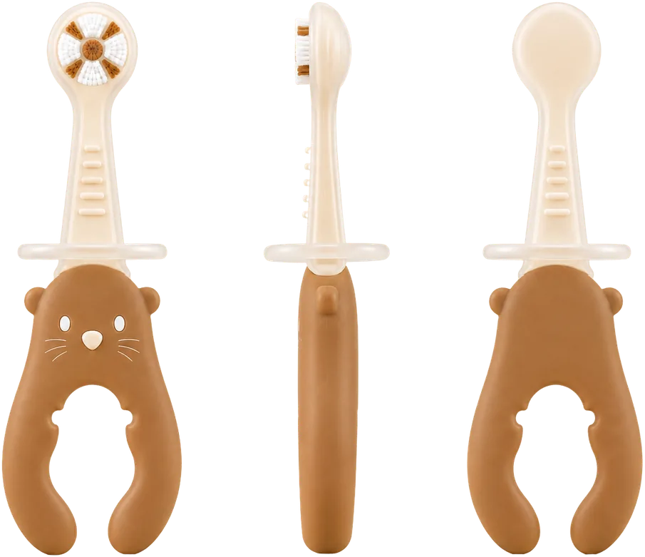
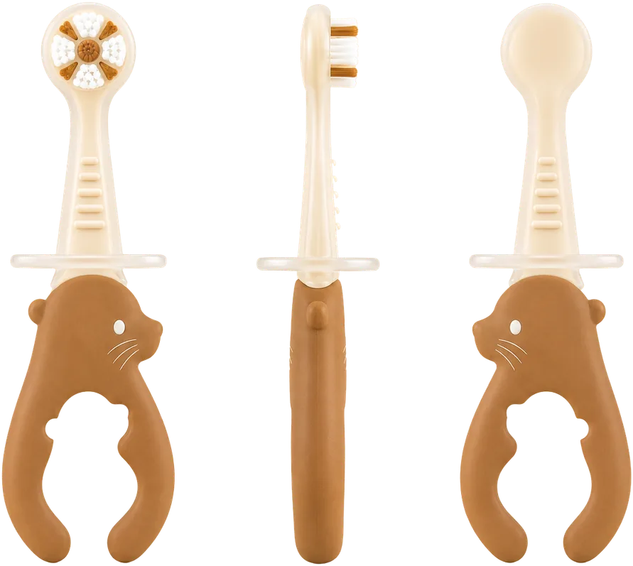
产品渲染 · 家长款
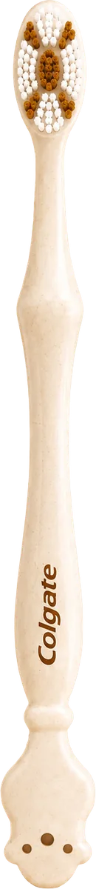
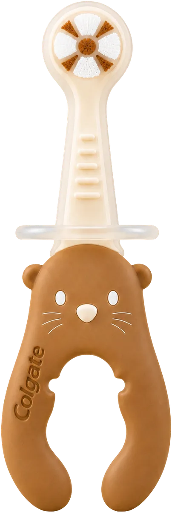
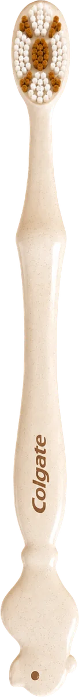
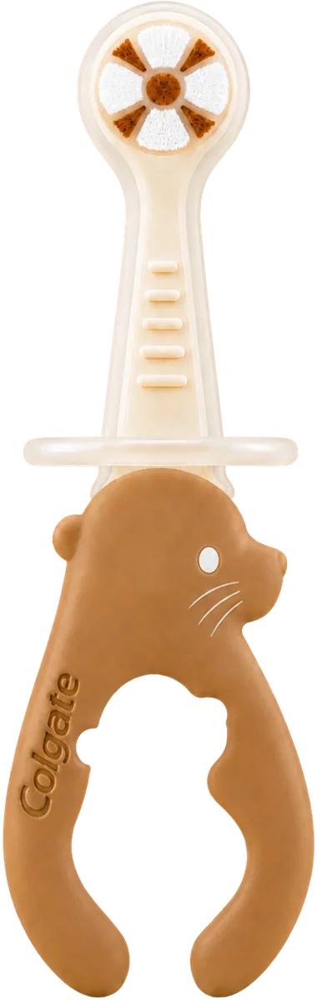
右侧小牙刷为儿童款，作比例参考。
握持展示
专为亲子协同刷牙设计：儿童易握，家长辅助更轻松。
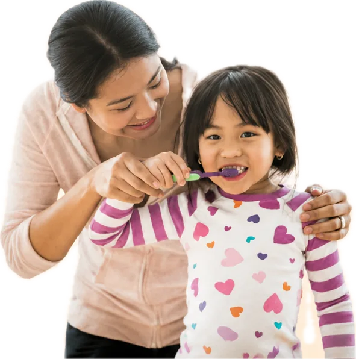
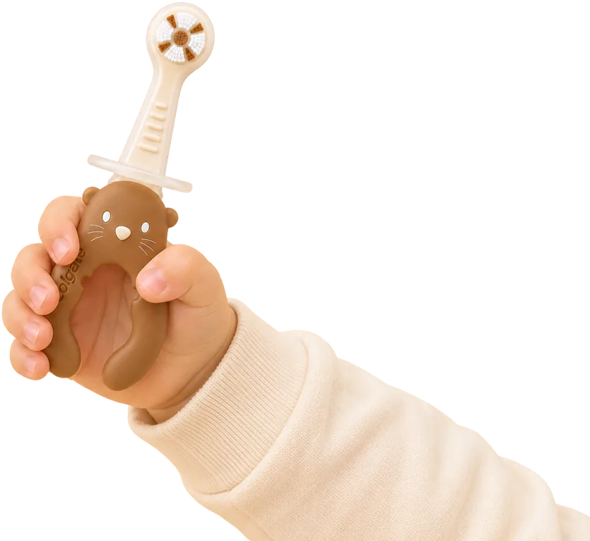
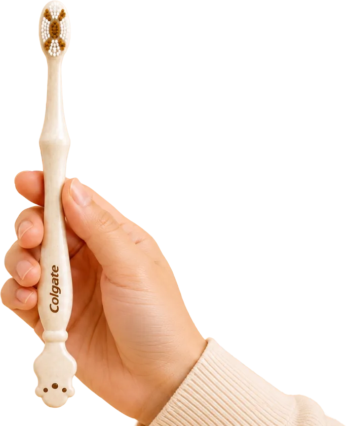
组合展示
家长牙刷的尾端是一只海獭宝宝，正好嵌进儿童牙刷的环抱里：两支牙刷收纳时合成“妈妈抱着宝宝”，用起来再分开。
关键取舍
不在工具上做加法，
把刷柄做成亲子协同的界面。
现有产品的三种加法，我都没有沿用
- 旧方向 01
Cut
加粗手柄Why握得住，但入口笨重、不灵活
Instead环抱式主握区：体积留给掌心，刷头一端保持纤细
- 旧方向 02
Cut
加防滑材料Why摩擦大了，握持方向仍不清晰
Instead用海獭造型本身指示握持方向
- 旧方向 03
Cut
加安全附件Why结构变复杂，工具负担更重
Instead软硅胶包裹刷头，保护集成进形态
儿童不是不会握，
而是握住后难以稳定控制。
家长不是不能帮，
而是缺少自然辅助介入点。
造型从哪来：海獭妈妈抱着幼崽，
就是“孩子主握、家长辅助”。
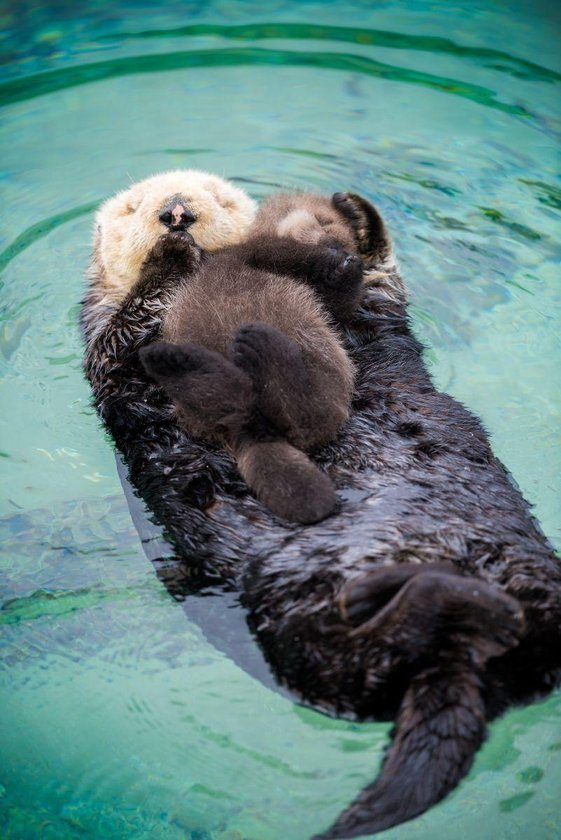
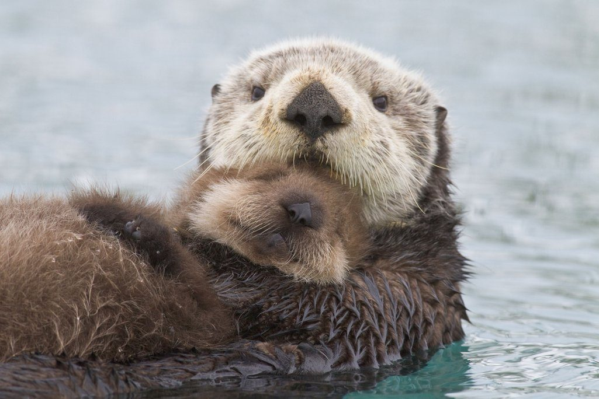
设计提取
把海獭妈妈怀抱幼崽的自然姿态，转译为牙刷造型语言。
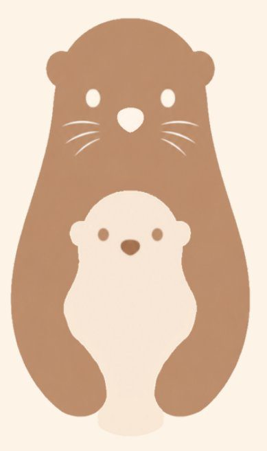
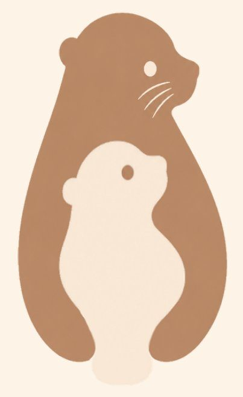
依据
孩子握得住牙刷，
却控制不住刷牙。
观察 3–6 岁儿童日常刷牙：握持方式、手部姿态与控制特点，决定了牙刷的体量、截面与握持区。
- 01简单操作
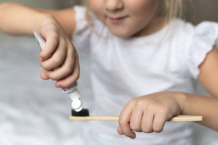
能自己完成挤牙膏、沾水等动作，说明手柄易抓握、易操作。
- 02主动拿握
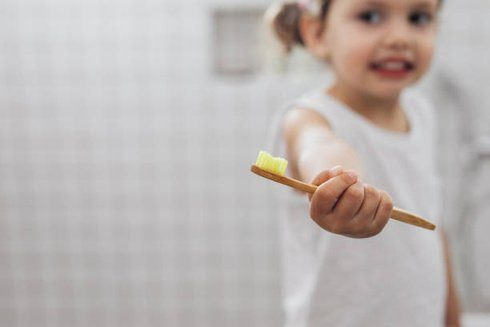
能够自主拿起牙刷并握住，愿意参与刷牙。
- 03刷牙姿态自然
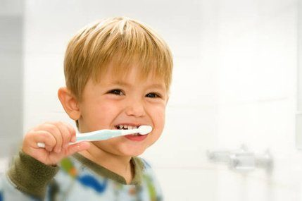
刷头入口角度多靠手腕与前臂带动，动作幅度较大。
- 04站立刷牙为主
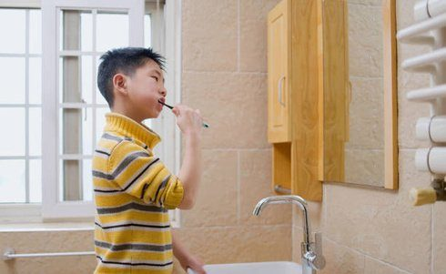
多为站立姿态，手肘抬起，手腕主导刷头运动。
- 05掌心包握为主
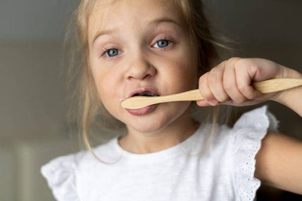
多数儿童采用拳握或掌心包握，而非精细三指捏握。
A · 握持方式
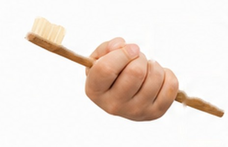
- 拇指压在一侧提供方向感
- 四指环抱提供主要握持力
- 掌心包裹增加稳定性
以掌心和四指包裹手柄，依靠手腕带动刷牙。
B · 握持位置
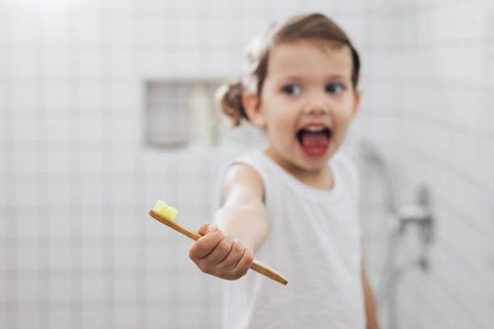
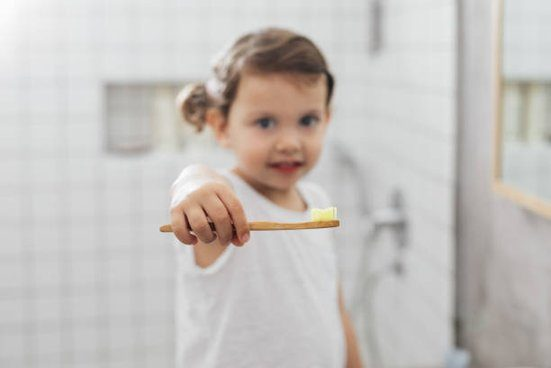
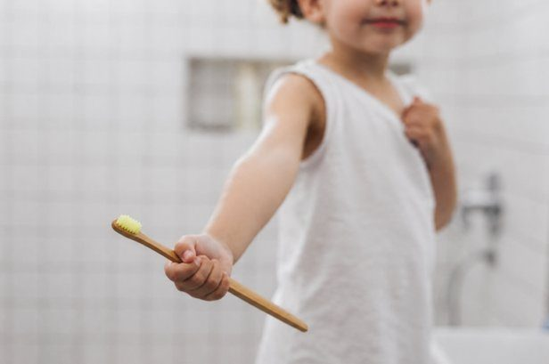
观察结论
- 儿童能主动握住牙刷，但多以拳握 / 掌心包握为主，控制精度有限。
- 刷牙动作主要由手腕和前臂带动，精细控制不足。
- 成人比例的细长牙刷会增加控制力矩，导致旋转、滑移与刷头角度偏移。
✦设计启示：需要明确的主握区，引导手自然落位。
家长参与时：两只手落在同一根手柄上。
孩子掌心包握，家长从外侧覆盖孩子手背，形成内外两层控制，现有牙刷从没为这个动作设计过。
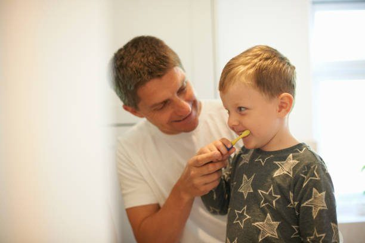
儿童以掌心包握为主，依赖手柄体积建立稳定控制。
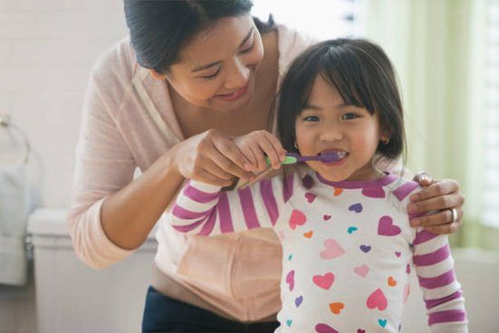
家长从外侧覆盖儿童手背，提供方向与力度的辅助。
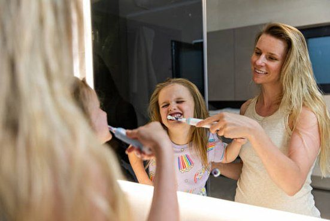
双手形成内外两层控制，共同修正牙刷方向与节奏。
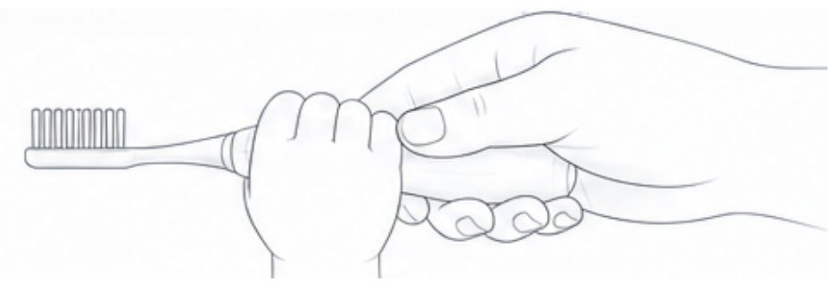
亲子辅助握持方式 · 示意
儿童前段主握，家长后段稳定辅助：同一根手柄上形成亲子协同控制，提供稳定支持与正确引导。
一刷相伴，呵护成长每一步。
过程
过程细节，按需展开：
+ 展开− 收起出发点：儿童牙刷不只是“缩小的成人牙刷”
Adult logic
成人牙刷逻辑
- 细长工具形态
- 三指精细捏握
- 精细动作控制
- 要求儿童适应工具
Kid reality
儿童真实能力
- 掌心包握为主
- 动作不稳定
- 方向感弱
- 需要成人支持
儿童不是小号成人
手部尺度、握持方式、力量分布与动作精度都不同于成人。
不是不愿意，是控制不了
握不稳、控不准、刷不干净，带来挫败与抗拒，而非主观懒惰。
不是替代完成，是支持参与
目标不是代替孩子刷得更好，而是帮他在参与中逐步建立能力：不会刷 → 被代刷 → 逐步学会刷。
不是单人工具，是亲子协同
儿童刷牙常处于亲子共同参与的真实情境中，工具需要同时回应双方需求。
+ 展开− 收起从观察到机会点
核心总结
- 控制力弱
- 清洁不到位
- 家长被迫代刷
- 参与感低
- 抵触刷牙
Design opportunity如何让儿童能稳定控制刷牙动作，同时让家长自然辅助而非替代，提升清洁效果与体验？
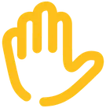
01儿童主握
从被动配合→ 主动参与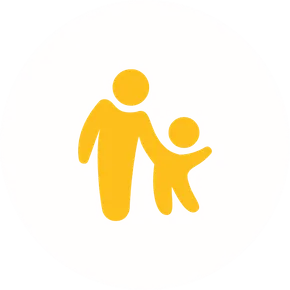
02家长稳定辅助
从代替刷牙→ 稳定儿童手部动作- 03
刷柄承接
从单人工具→ 亲子协同界面
+ 展开− 收起手绘草图：儿童款
手绘草图 · 儿童款
以海獭妈妈怀抱幼崽的姿态为原型，通过多角度与细节草图，探索造型结构、握持体验与刷头形态。
造型迭代
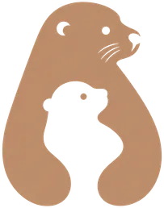
V1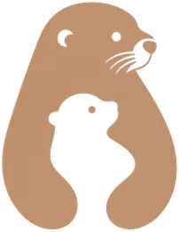
V2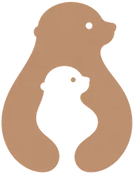
V3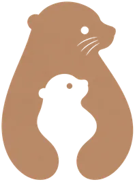
V4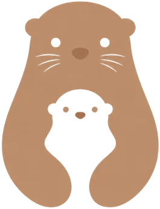
V5
五轮造型迭代：从侧身逐步转向正面环抱，轮廓收圆，中间的负形留给手指落位。
造型概念
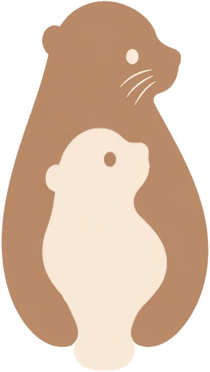
母体包裹，幼崽置于腹部中央，形成天然保护感与陪伴姿态。
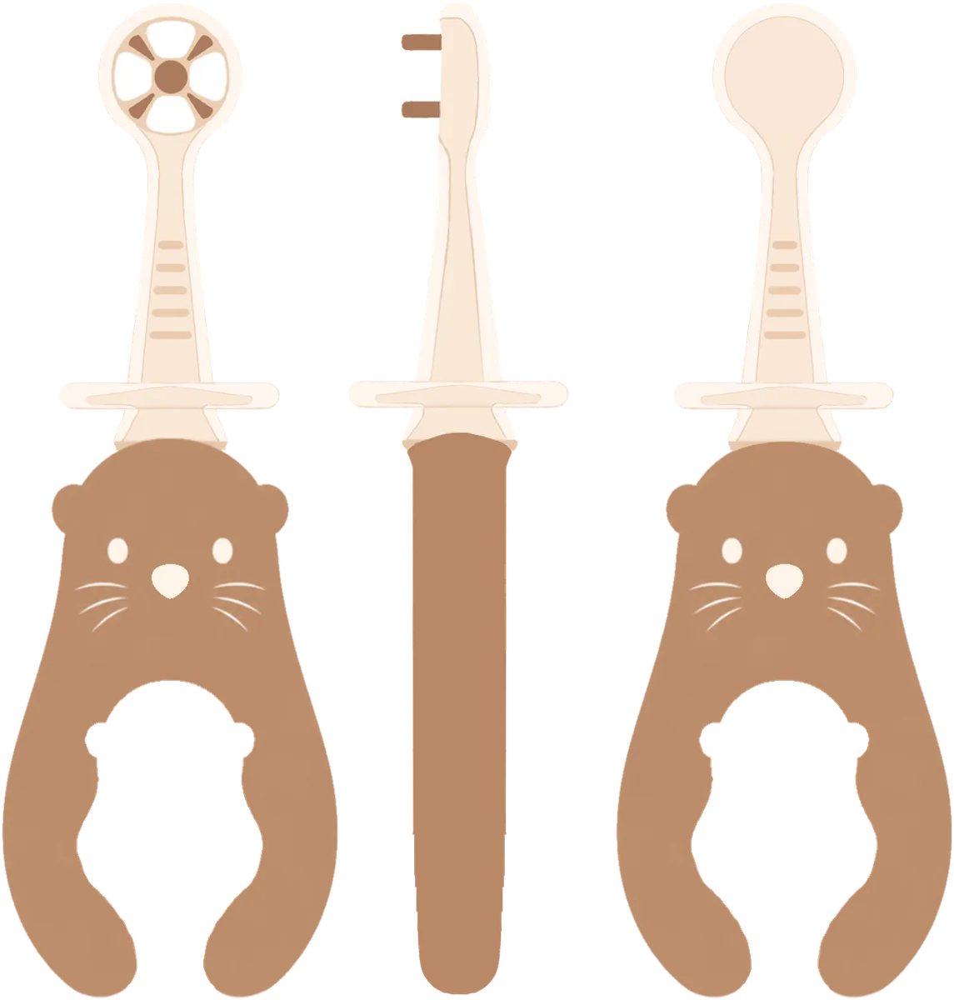
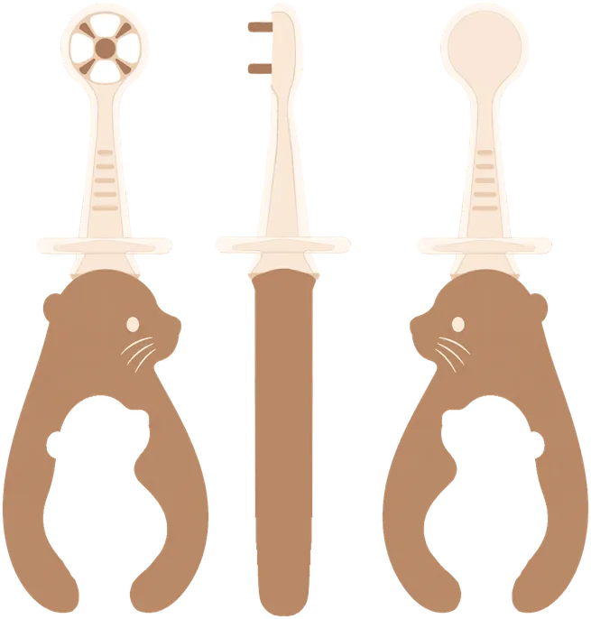
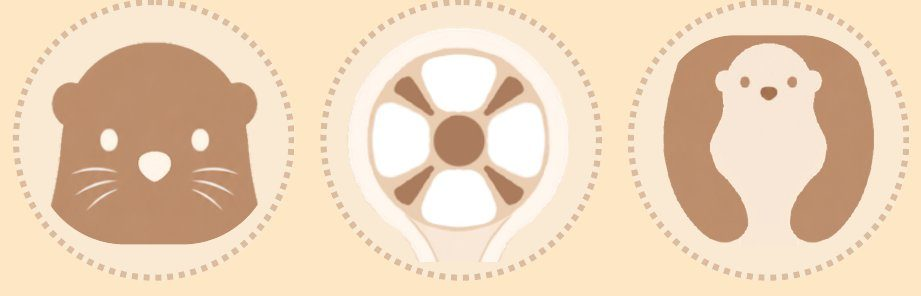
可爱五官造型
圆耳、小眼、短胡须，传递柔和与安全感。
硅胶包裹刷头
柔软包裹，保护口腔，安全不伤牙龈。
环抱握持结构
母体环抱形态，贴合儿童手掌，握持稳定。
+ 展开− 收起手绘草图：家长款
手绘草图 · 家长牙刷
家长款以辅助控制为核心：延长刷柄与稳定握持结构，帮助家长在亲子协同刷牙中完成方向引导。尾端延续海獭幼崽的造型，和儿童款放在一起就是一对母子。
